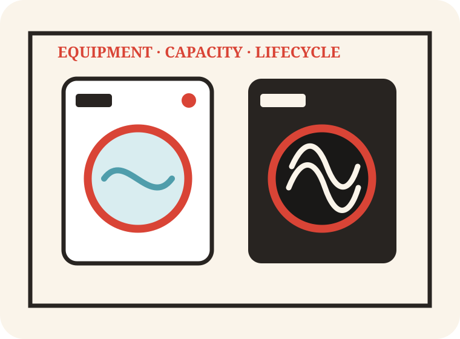

Commercial laundry equipment
Verified capability presented with a clear route into the right enquiry workflow.
An editorial commerce concept for equipment supply, repairs, annual servicing, duct cleaning and the Ultimate Care lease-purchase route.

Only services supported by the business’s public information are used in this concept.
Verified capability presented with a clear route into the right enquiry workflow.
Verified capability presented with a clear route into the right enquiry workflow.
Verified capability presented with a clear route into the right enquiry workflow.
Verified capability presented with a clear route into the right enquiry workflow.
The public site presents a very broad national offer across laundry, catering, detergents, cleaning and fire-risk services, but enquiries are distributed through basic forms. The journey does not consistently qualify sector, equipment capacity, utilities, purchase versus lease, current fault, site readiness or desired response date.
A sector-led equipment and service configurator with separate sales, breakdown and recurring-service CRM pipelines, automated follow-up, service reminders and sector SEO pages.
A single structured route for care, hospitality, veterinary, leisure and other commercial sites.